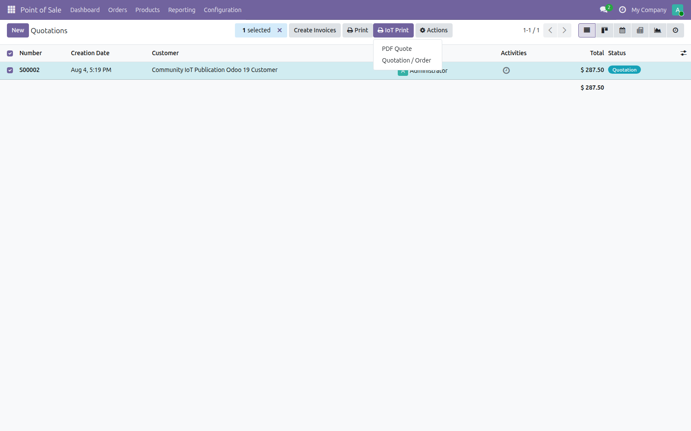
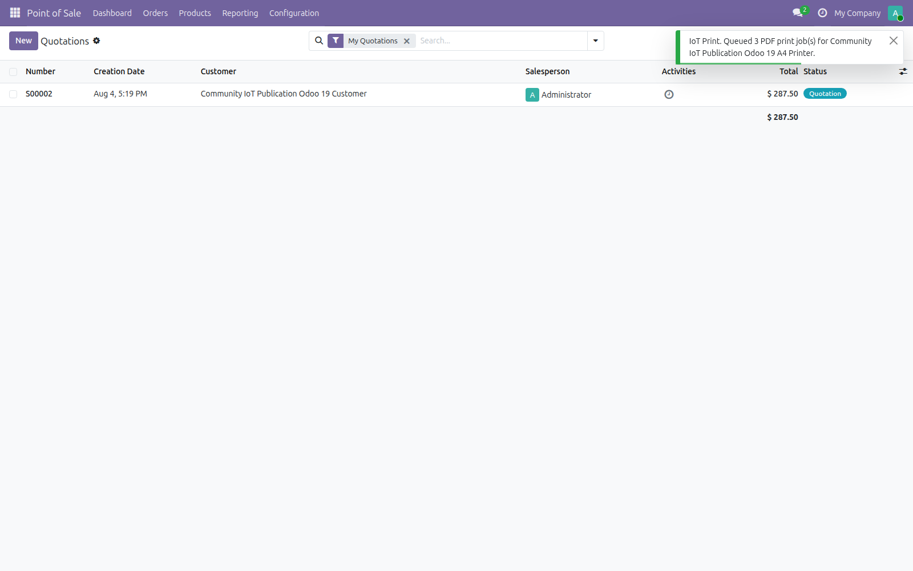

Community IoT Printing for Odoo 19
Send a QWeb PDF report through the separate IoT Print action to an online PDF-capable standard printer.
Separate print action
Select a quotation or order and open IoT Print without replacing Odoo's standard Print menu.
Controlled PDF jobs
Choose the standard printer, filename and 1–10 copies; each copy becomes an independent job.
Access-aware rendering
Reports use the current user's permissions, company, language and record rules.
Fresh Odoo 19 interface evidence
These images were captured from the current Odoo 19.0 branch in a temporary local database.



Compatibility
Odoo 19 Community · Private Odoo.sh projects · On-premise deployments · Requires IoT Box Community and the Community IoT Agent.
Descripción en español
Encole reportes PDF QWeb desde el menú IoT Print de Odoo 19, eligiendo impresora estándar, nombre de archivo y copias.
Las capturas corresponden únicamente a la rama Odoo 19.0 y muestran el menú, el asistente y la confirmación del trabajo encolado.